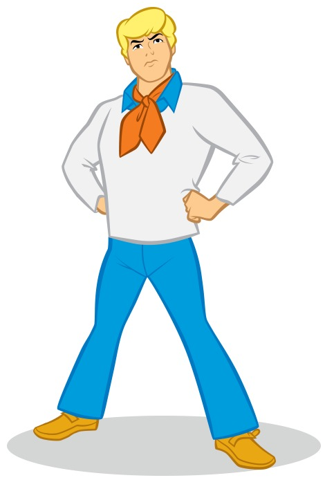
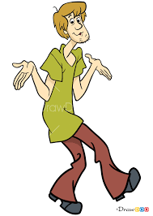
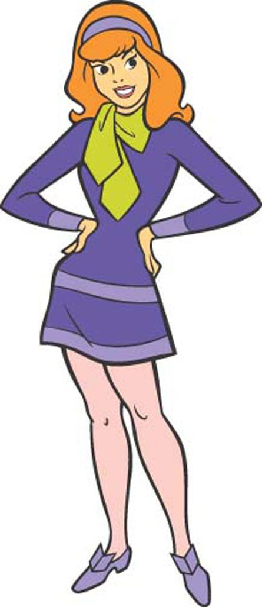
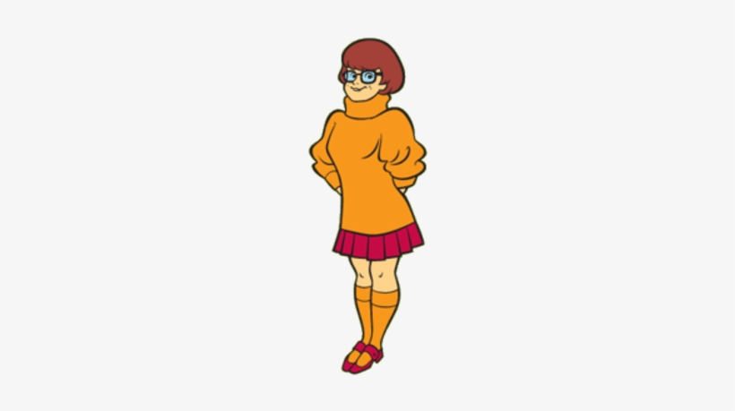

Fred Jones
Sometimes called "Freddie Jones" by Daphne Blake in the franchise,
he wears a blue and/or white shirt (which is sometimes worn under a white shirt,
sweater, or jacket) and blue jeans. In the original depictions, Fred wears a
16 1/2 size orange ascot. More..

Shaggy Rogers
Norville "Shaggy" Rogers is a fictional character from the American animated television
series Scooby-Doo, about the adventures of four crime-solving teenagers and Shaggy's pet
great dane, Scooby-Doo. Shaggy is a cowardly slacker more interested in eating than
solving mysteries.He is the only Scooby-Doo character (besides Scooby) to appear in
all iterations of the franchise. More..

Daphne Blake
Together with her other teenage companions, Fred Jones, Shaggy Rogers,
Velma Dinkley, and Shaggy's pet great dane Scooby-Doo, Daphne would engage
in solving various mysteries. Daphne was portrayed as the enthusiastic,
but clumsy and danger-prone, hence her nickname "Danger-Prone Daphne",
member of the gang, who always follows her intuition. More..

Velma Dinkley
Throughout her various incarnations, Velma is usually portrayed as a
highly intelligent young woman with various interests ranging from highly
specified sciences (which in the "Scooby and Scrappy Doo" series leads her
to pursue a career as a NASA research scientist) or merely being very well
read on various and sometimes obscure information, such as ancient Viking
writing. More..